Journey to the Reishi
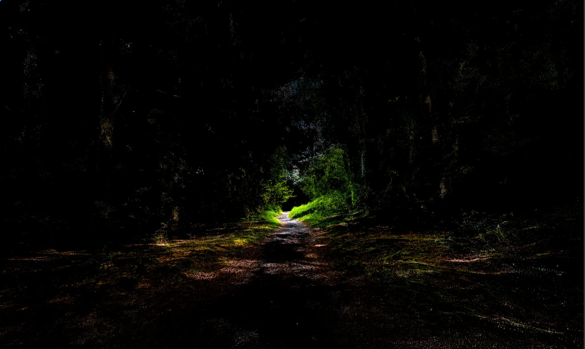
Journey to the Reishi investigates how Eastern medical culture and Western science might coexist, by taking seriously an animistic interpretation of how Reishi is used. It draws on the Hmong practice of guiding souls back to their origin, and connects that practice to the traditional use of Reishi. In this reading, the perceived decline in the mushroom’s efficacy may come from the entrapment of its soul.
The study follows Anna Tsing’s The Mushroom at the End of the World (2015) in attending to how the Western scientific paradigm has influenced and controlled Eastern indigenous cultures and beliefs. From an animistic perspective, cultivated Reishi might regain its medicinal properties once it is returned to its place of origin.
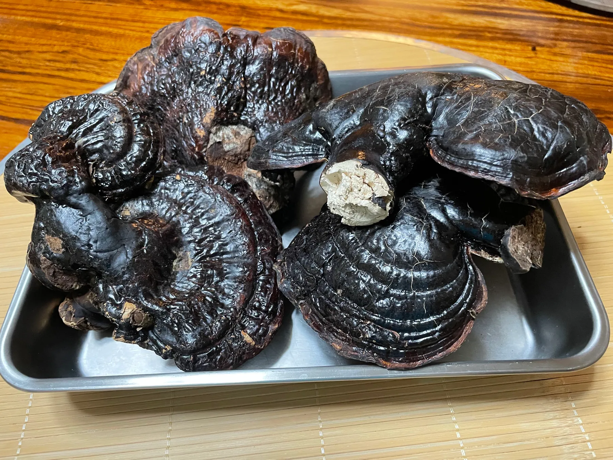
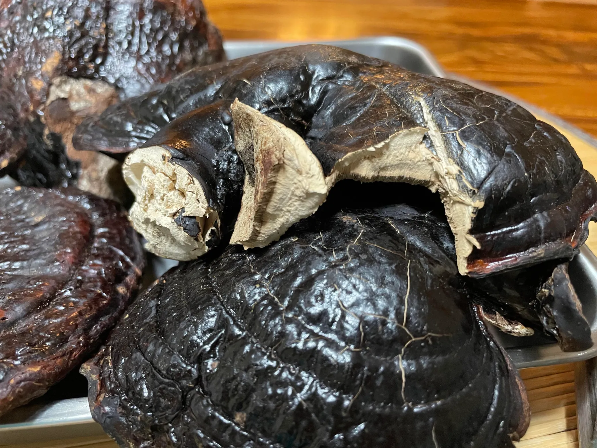
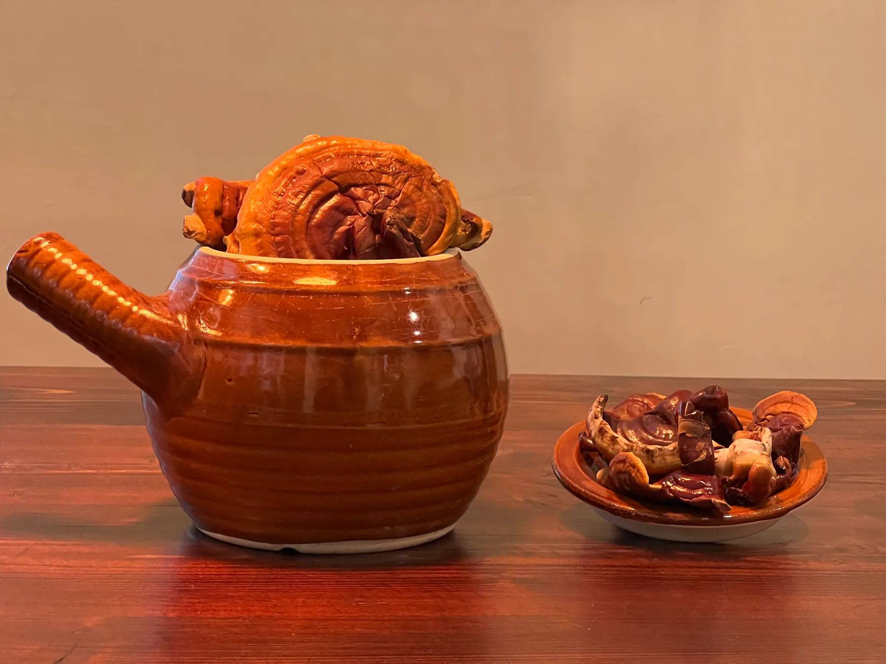
The research began with the mushroom itself: growing Reishi from a kit, sourcing local Reishi and its extract, and learning its taste and smell.
Photogrammetry then became a metaphor for spirit generation. The Reishi was scanned and visualised as a point cloud, a body made of light. A forest was scanned in the same way, and transformed into the origin that the spirit travels back to.
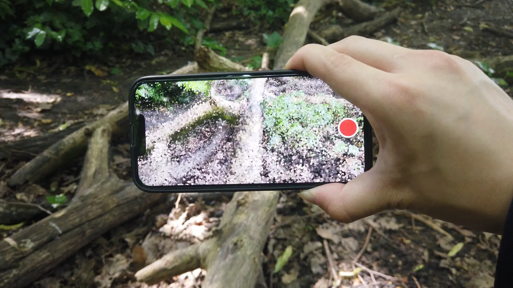
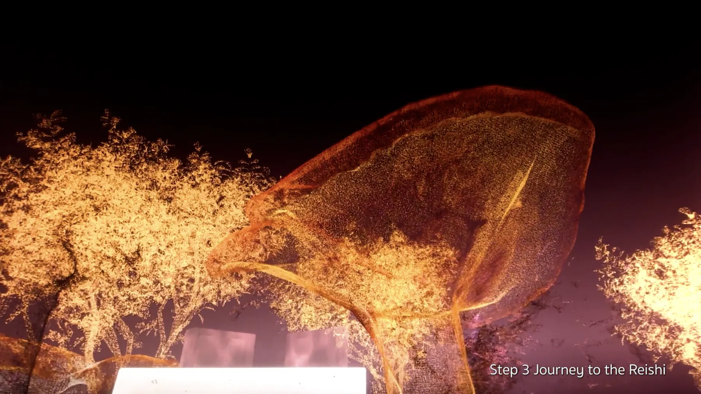
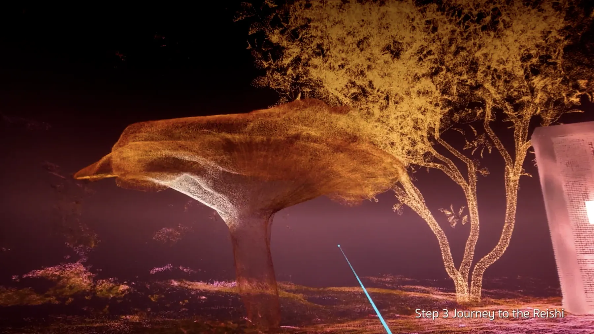
The work unfolds in three steps. Visitors first taste and smell locally sourced Reishi, as a prelude to the journey. They then feel the spirit of the Reishi and the weight of its ever-changing form. Finally they put on a headset and accompany the spirit home, on a VR journey led by an unreliable narrator.
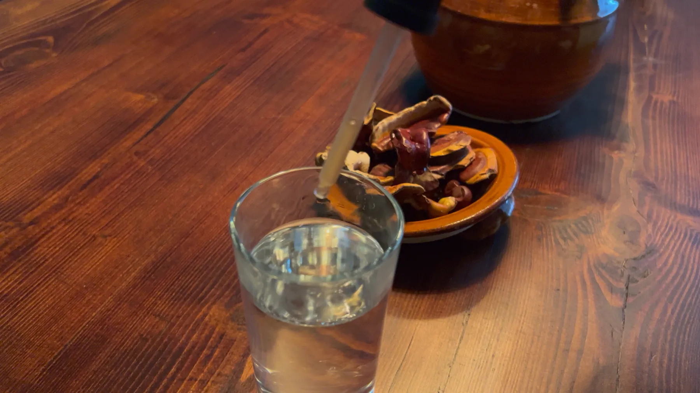
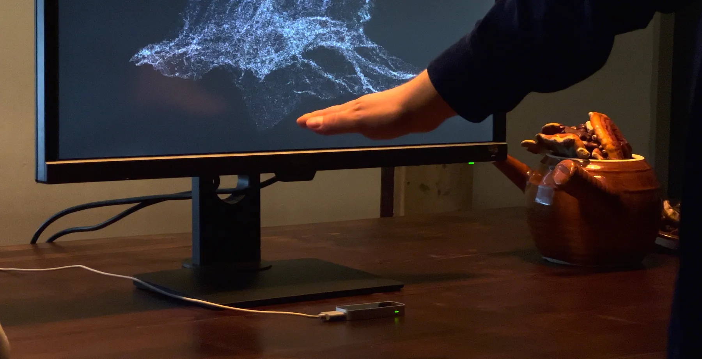
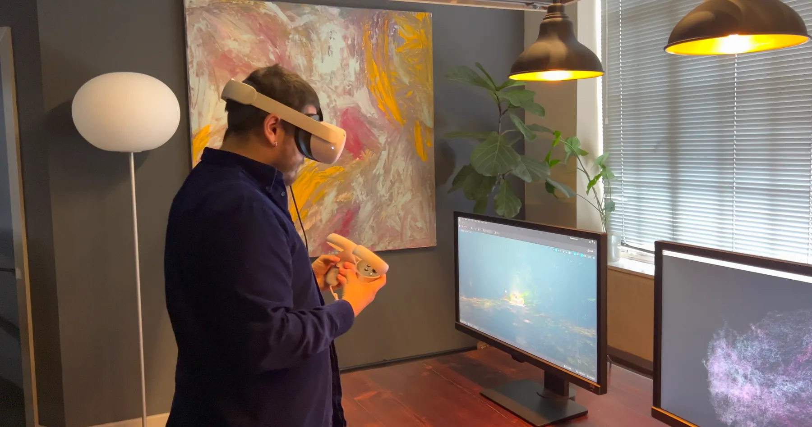
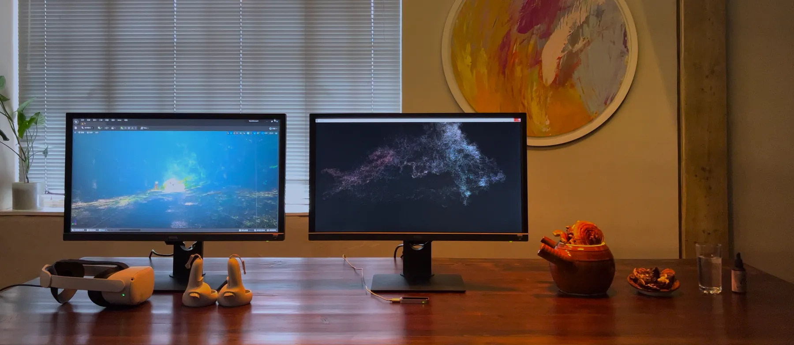
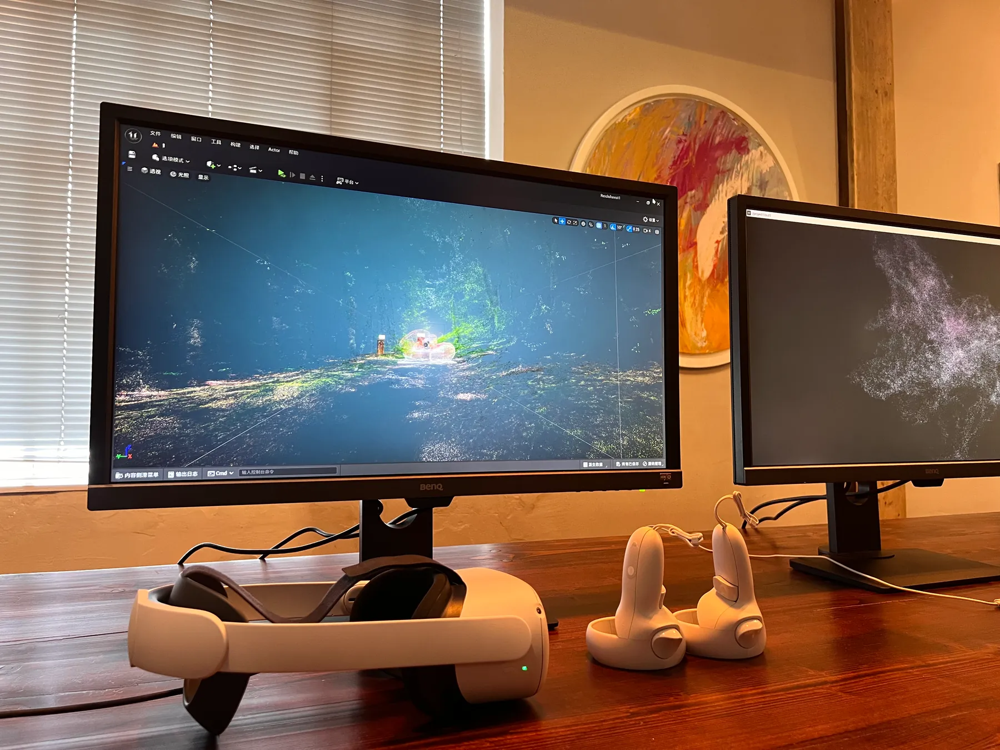
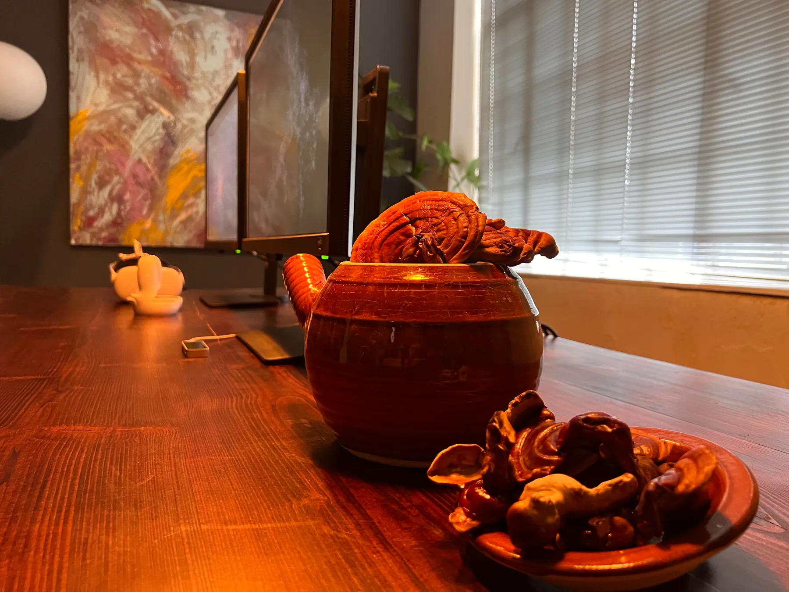
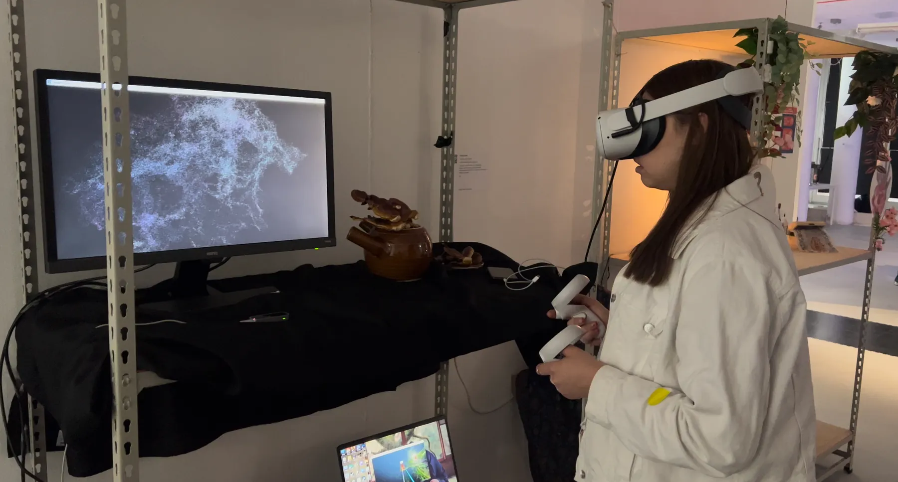
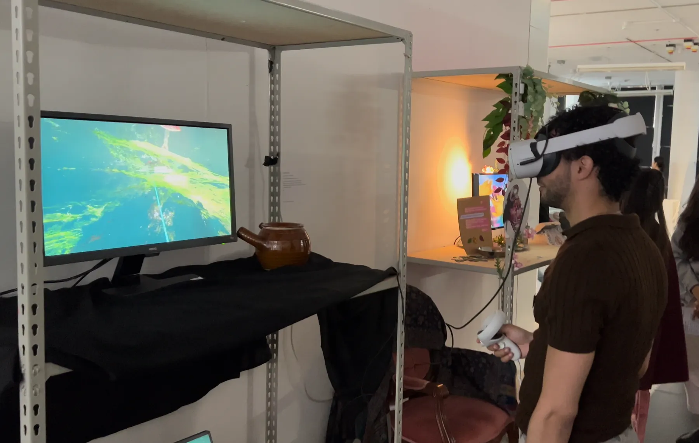

Credits
- Artist
- Jimmy Chen